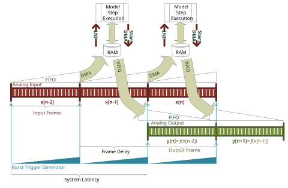

IO104 Usage Notes — Usage information about the I/O module
In this configuration, the burst trigger generator paces both input and output bursts. The Simulink model is driven by the "IO104 DMA INT" interrupt, so the execution is started shortly after the trigger signal.
With synchronized input and output frames we get a constant system latency of exactly two frame times.
The output signal will have no discontinuities or gaps.

Interrupt driven execution
In DMA mode, the model must contain an Interrupt Setup block that triggers a subsystem or the model. Refer to the block documentation for more information.
Interrupt Source
The interrupt is always generated by the Analog input block's DMA completion. If that block is not present in the model, the driver uses a dummy input acquisition in the background.
Interrupt Timing and Latency
The interrupt is issued a few microseconds after the analog input has completed the sampling of one frame.
In continuous sampling mode (sampling time x frame size = frame time) the interrupt is issued a few microseconds after the trigger signal, when the last samples are transferred to memory. As the interrupt is starting the model execution, you should make sure that the Analog input block is the first block to be executed and that the Analog output block is executed before the next trigger occurs. Like this, a closed-loop operation with a precise latency of two frames times can be realized.
When the frame size is much smaller than what would fit into one frame time, only one sample for example, we can achieve a precise latency of only one sample.
Execution Time Estimation
The time needed by the driver to bring DMA data to the Analog input's output ports can be calculated like this: t = frame_size * number_of_channels * 4.046ns
The time needed by the driver to read the Analog output's input ports and send them to the DMA channel can be calculated like this: t = frame_size * number_of_channels * 3.647ns
These factors apply to a speedgoat performance real-time target machine running at 3.5GHz in multicore mode.
The analog inputs, analog outputs and the frame burst trigger can all be configured independently as either initiators or targets.
An initiator can be connected to up to four targets.
| Pin Name | Being initiator means that the module… | Being target means that the module… |
|---|---|---|
| OUTPUT CLK I/O | …drives the signal down each time it clocks its own analog outputs. Clocks are generated by the internal rate generator hardware, using the Output Sample Time setting on the Setup block's analog outputs tab. | …reads this pin as a clock source for its analog outputs. The internal rate generator is ignored. |
| INPUT CLK I/O | …drives the signal down each time it clocks its own analog inputs. Clocks are generated by the internal rate generator hardware, using the Input Sample Time setting on the Setup block's analog inputs tab. | …uses this pin as a clock source for its analog inputs. The internal rate generator is ignored. |
| TRIGGER I/O | …drives the signal each time it triggers its own analog output and/or input frame burst. Triggers can be generated by the internal rate generator hardware, using the Frame Time (Burst Trigger Interval) setting on the Setup block's main tab. | …uses the pin as a trigger input. The internal rate generator is ignored. |